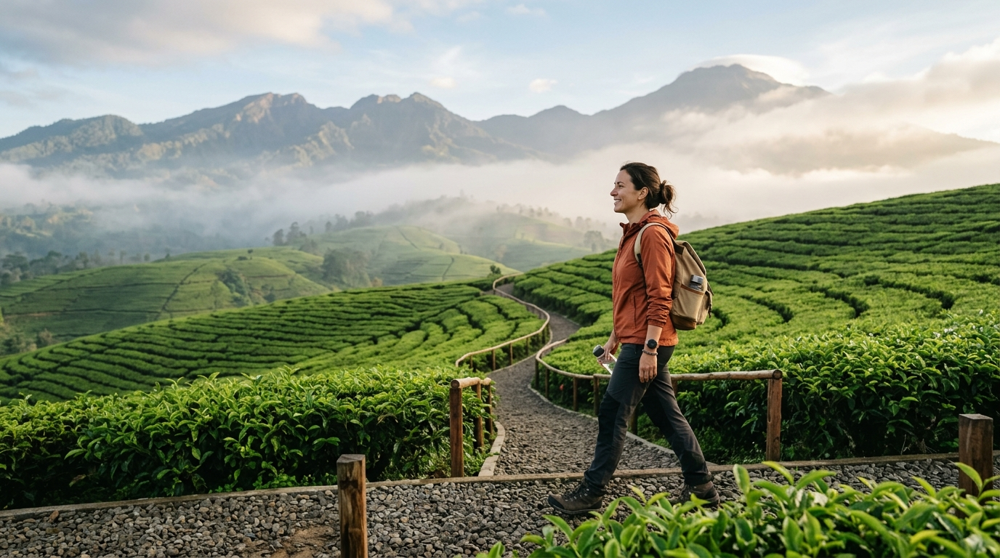
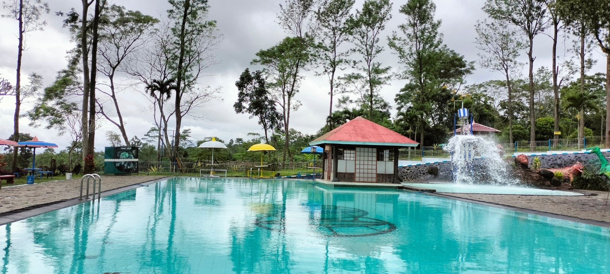
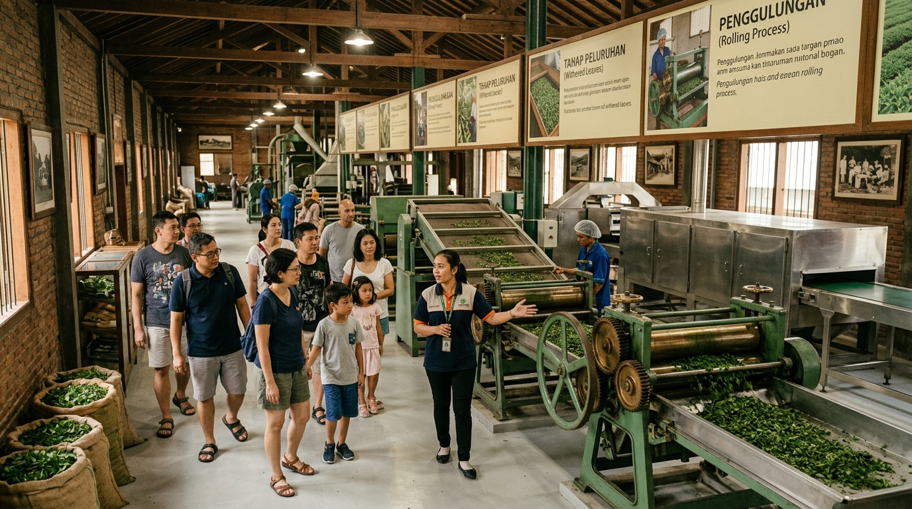
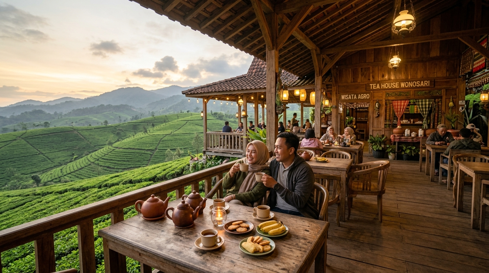
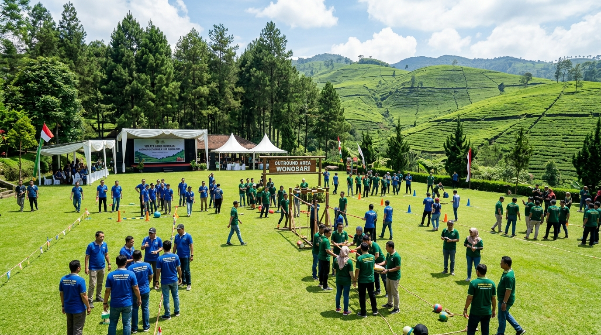

🌴 Fasilitas Rekreasi & Umum
Area wisata alam terbuka, edukasi, dan kuliner untuk kenyamanan semua kalangan

🌿 Rekreasi AlamJalur Tea Walk
Jalur trekking ringan menyusuri kebun teh dengan pemandangan Gunung Arjuno dan udara segar pegunungan 1.100 MDPL. Cocok untuk semua usia, didampingi pemandu lokal berpengalaman.
- Panjang jalur ±2 km (adjustable)
- Pemandu lokal tersedia

💧 Rekreasi AirKolam Renang Air Hangat
Kolam renang berfasilitas air hangat alami yang cocok untuk relaksasi setelah beraktivitas fisik seharian. Tersedia kolam anak dangkal dan kolam dewasa bersumber dari mata air pegunungan Arjuno.
- Air hangat alami tanpa kaporit pekat
- Kamar bilas & ganti tersedia
 🧒 Anak-Anak
🧒 Anak-Anak
Taman Bermain Anak
Area terbuka hijau berpagar aman dengan wahana permainan edukatif anak: ayunan, perosotan, jungkat-jungkit, dan jungle gym mini. Dirancang untuk usia 3–12 tahun dengan material ramah lingkungan.
- Area pagar aman & terawasi
- Material food-grade & anti-karat

🏭 Wisata EdukasiWisata Edukasi Pabrik Teh
Tur panduan belajar sejarah pemetikan hingga proses pengolahan daun teh hitam di pabrik bersejarah era kolonial 1875. Peserta dapat menyaksikan proses pelayuran, penggulungan, fermentasi, dan pengepakan.
- Pemandu berpengalaman PTPN
- Tea tasting experience inklusif

🍜 KulinerRestoran & Tea House
Tempat makan dengan menu khas pedesaan serta varian teh seduh hangat asli Wonosari. Kapasitas 300+ seat prasmanan untuk rombongan besar. Tersedia paket nasi tumpeng, gala dinner, dan coffee break.
- Kapasitas 300+ seat prasmanan
- Menu halal bersertifikat

🏨 AkomodasiPenginapan & Cottage
Pilihan akomodasi mulai dari kamar hotel tipe Standard, Deluxe, Superior, hingga cottage keluarga bernuansa pegunungan klasik. Semua dilengkapi air hangat, Wi-Fi, dan balkon pemandangan kebun teh.
- Kapasitas ratusan tamu
- Free water heater & Wi-Fi